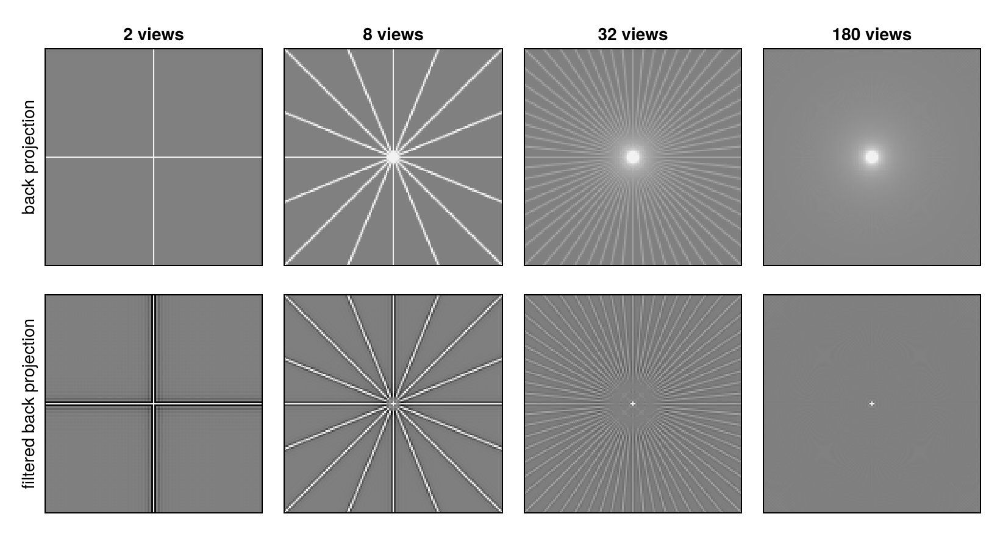
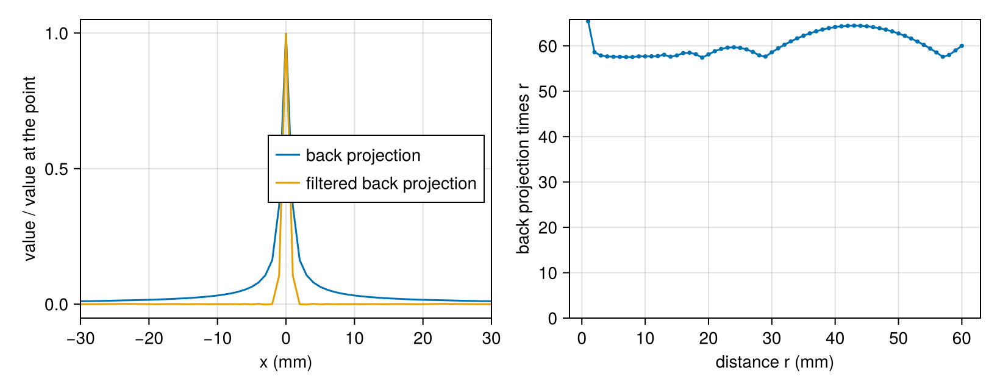
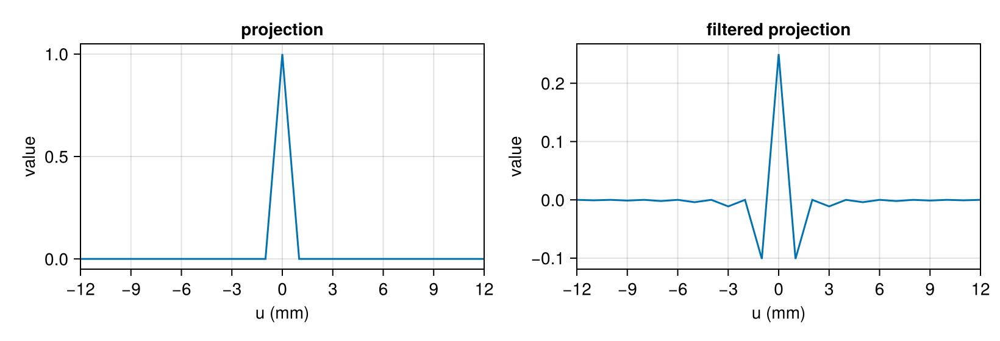

Filtered Back Projection
A projector maps an image to line integrals; its adjoint, the back projection, maps line integrals back to an image: every data element adds its value to the voxels along its ray, with the weights of its row of the System Matrix. The back projection alone does not recover the image: it blurs it. Filtered back projection (FBP) filters the projection of every view (its data) with the ramp filter first, and the back projection of the filtered data recovers the image. This page shows why with the simplest image, a single point, in 2D with parallel beams, and then what changes for fan and cone beams, where the method is called FDK (Reconstruct with FDK).
using CTOperators, CairoMakie, LinearAlgebraA point
The image has 129 × 129 pixels of 1 mm and is 1 in the middle pixel, 0 elsewhere. The scan is a parallel beam with views evenly spread over half a circle, a detector of 183 cells of 1 mm, and the data are the forward projection with the voxel-driven method (see Voxel-Driven Method), whose adjoint is the back projection used by FBP.
image = ImageGeom(; dims=(129, 129), deltas=(1.0, 1.0))
x_point = zeros(Float32, 129, 129)
x_point[65, 65] = 1
scan(n) = parallel_beam(; angles=range(0, pi, n + 1)[1:n], nu=183, nv=1, du=1.0);Back projection op' * y and filtered back projection with FDK (for parallel beams it is FBP; window=:ramp: the plain ramp filter, no window):
function reconstructions(n)
op = VoxelDrivenProjector(image, scan(n))
y = op * x_point
op' * y, FDK(image, scan(n); window=:ramp) * y
end
views = (2, 8, 32, 180)
results = Dict(n => reconstructions(n) for n in views);The figure shows both for 2, 8, 32 and 180 views, each divided by its value at the point, with a narrow gray scale (values above 0.1 are white, below -0.1 black) to show what lies around the point:

The back projection spreads the projection of the point in each view over a line through the point: with few views a star of streaks, with many views a blur around the point. In the filtered back projection the streaks are still there with few views, but with more views they cancel: with 180 views little more than the point remains.
The blur of the back projection
Away from the point, only the views whose ray through a pixel passes close to the point add to it. The farther the pixel, the fewer: the back projection falls off like $1/r$ with the distance $r$ from the point. The profile along x through the point (left, 180 views, divided by the value at the point, with the filtered back projection for comparison) and the back projection times $r$ (right), which stays within about 10 % of 60:

Every point of an image is blurred the same way, so the back projection of the data of an image is the image convolved with $1/r$ . In 2D the Fourier transform of $1/r$ is $1/|k|$ up to a constant factor ($k$ the spatial frequency): the back projection damps high frequencies, and dividing by $1/|k|$ , that is, multiplying by $|k|$ , undoes it. By the Fourier slice theorem this multiplication can be done on each projection, along the detector, before the back projection: the ramp filter $|k|$ .
The ramp filter
The ramp filter is applied as a convolution along each detector row. Its kernel is positive at the center and negative on both sides (see Reconstruct with FDK for the windows that lower it at high frequencies). Filtered, the projection of the point gets negative side lobes (one view):

In the back projection, the positive center of each filtered projection lands on the point, and the negative side lobes land next to it, along the line of the view. With many views, the side lobes of all views add up to cancel the blur that the positive parts leave around the point. With few views they cannot: the streaks of the first figure remain.
Fan and cone beams
For a fan beam the rays of a view are not parallel, and FBP needs weights in addition to the ramp filter (Feldkamp et al. 1984, Section 2, derive the first two for a flat detector):
- every data element is weighted by the cosine of the angle between its ray and the central ray of the view, before the filter;
- in the back projection, every pixel is weighted by the square of its magnification in the view: the distance from the source to the detector divided by the distance from the source to the pixel (for a flat detector both along the central ray; for a detector on an arc
FDKtakes both within the plane of the orbit); - lines that the scan measures more than once are weighted so that each line counts once (the redundancy weighting,
AbstractRedundancy; for short scans Parker 1982).
Feldkamp, Davis & Kress (1984) carry this over to a circular cone beam: each detector row is filtered as a fan, and the cosine weight includes the angle of the row. This is FDK. In the plane of the source orbit it is the fan-beam FBP; away from it, it is an approximation. The voxel-driven back projection fits these steps: it visits every voxel, finds where it lands on the detector and knows its magnification there. FDK implements all of them, for parallel beams with the cosine weight and the magnification equal to 1; Reconstruct with FDK shows how to use it.
References
- L. A. Feldkamp, L. C. Davis, J. W. Kress, "Practical cone-beam algorithm", Journal of the Optical Society of America A 1(6), 612–619, 1984.
- D. L. Parker, "Optimal short scan convolution reconstruction for fanbeam CT", Medical Physics 9(2), 254–257, 1982.
See also
- A. C. Kak, M. Slaney, "Principles of Computerized Tomographic Imaging", IEEE Press, 1988, chapter 3.
This page was generated using Literate.jl.